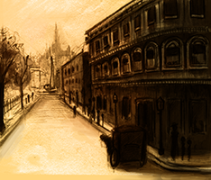
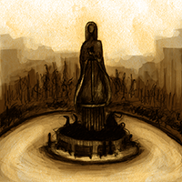
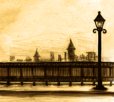
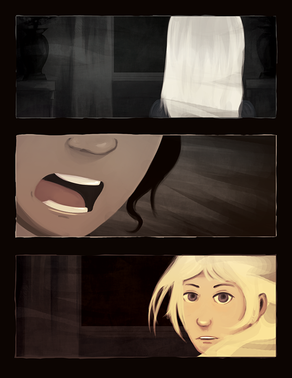

It is 1898, and a series of brutal murders sends Reverier into chaos.
The government declares a state of martial law. Military Police march the capital's streets in an attempt to keep the peace. Arrests and interrogations have been made—some highly questionable. All this is done to protect the people from the Creatures that have plagued them ever since. This time, however, a new rogue group has risen with the one desire to destroy humanity.
Enter Lucas, journalist for The Reverier Times and unfortunate enough to find himself at the wrong place at a very wrong time. Together with fellow human, Catherine Hunter and the Spectre, Cipher, Lucas is forced to battle secret societies, uncover conspiracy theories and face the family he swore to forget in his ambitious quest for truth—whatever "truth" means.
Lucas is the youngest son of the Equestrel Noble House, but when he turned of age, he left his crazy family and vowed to never return. He has then tried to establish himself in the capital city of Reverier, taking on the role of a writer for the daily paper to earn some extra cash.
He aspires to be a lawyer and has applied for scholarships to attend University. He had just received his acceptance letter when he runs into trouble during an assignment for The Reverier Times.
Not much is known about Cipher other than his role as the Commander of the Resistance. He served as one of the leaders of the reconnaissance groups since the society's formation, but took the head position after the death of the previous commander and his crew.
Catherine Hunter is the sole survivor of the Hunter House after her family was targeted by the Rogues earlier in the year. She has abandoned her studies in Medicine and given up her title as Heir to the House to join the Resistance, a secret group dedicated to fighting the growing threat in Reverier.
She serves as leader of one of the reconnaissance groups, and was on duty when she ran into a reporter for the paper, whom she was forced to silence immediately.
The world is divided into four main continents: Aurea of the North, Caelum of the South, Vires of the East, and Fortis of the West.
Aurea, true to its name, stands as the world's finest alliance. At its head is the country of Cresta. Vatskya lies at its heart. Reverier reigns in the south. Tensions rise between the Aurea and the Vires countries, with the latter opposing the former's leadership.
Aurea's three great nations were once smaller countries that fought together in the war against the oppressive Alvar Empire in the year 996. Alvar's royal family plotted to extend the empire's reach, using their specialized abilities to gain advantage over those of lesser skill and those without. This angered Humans and Creatures—those with the abilities— and prompted them to take action. Previously called The Rowdaen Alliance, they sought to overthrow Alvar's emperor and prevent the Conquest of Nations.
However, winning the war was not the end of it. The war against the Alvar Empire opened the possibility of Creature countries abusing their powers and causing destruction. Some countries sympathize with Alvar, leading to skirmishes. This fear drove the Humans to ally and exterminate the Creature nations. Being far too few and scattered, the Creatures were either killed or driven from their homes, forced to live in secret.
Following the fall of the Alvar Empire, Reverier, comprised of smaller Human nations, established itself as a country. A Noble House rules over each of the 12 states. Over the years, their country grew from a monarchy to a more democratic government.
  While most of the older laws have long been abandoned, the 12 main Noble Houses still retain ownership and control over the land that they were given. Aside from safeguarding the citizens of each state, the Houses must also actively contribute to the country.
The Hammond family, for example, is the Royal House of Reverier. While the old monarchy has lost its iron grip on the country, the Hammonds still hold enough power to sway the government.
Another example would be the Equestrels. In the old days, they provided the kingdom members of their family to serve as Knights of the Realm. Now, it has turned into an organization whose main goal is to train people to become soldiers for the nation.
Equestrel is a webcomic-in-the-making, and is set to update every two weeks.
